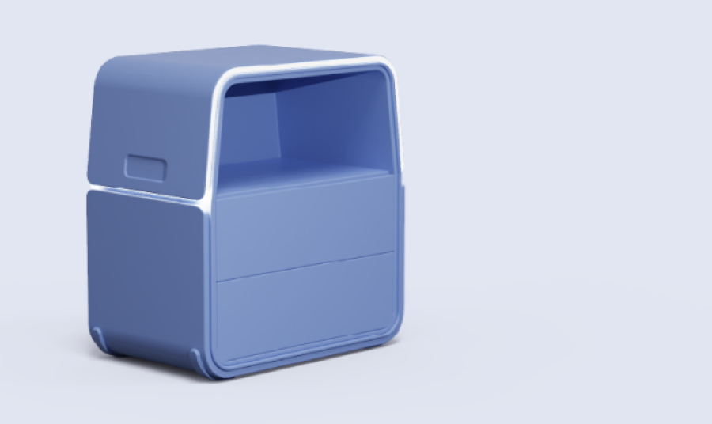

KINO Design
모듈형 사이트 테이블 디자인
기여도 : 개인 프로젝트 (100%)
제작 기간 : 3개월
툴 : Rhino, Keyshot, Photoshop, illustrator

Project Vision
이 프로젝트는 1인 모듈형 사이드 테이블을 디자인하는 과정으로, 심플한 디자인과 섬세한 타겟 분석을 통해 사용자 중심의 비전을 실현한 제품입니다. 고객의 다양한 라이프스타일을 고려하여 기능적이면서도 미니멀한 디자인을 강조하며, 공간 활용도를 극대화할 수 있는 방향으로 구상하였습니다. 이를 통해 보다 효율적이고 세련된 생활 공간을 제공하고자 했습니다.
- 01 평소에는 협탁으로 사용하다가 필요할 때는 미니 테이블로 변형 가능
- 02 은은한 조명과 내장 스피커로 다양한 용도로 활용 가능한 디자인
- #심플함
- #무광
- #힐링
- #1인가구
- #모듈가구
- #멀티가구
- #사이드 테이블